Al je antwoorden worden gewist en je begint opnieuw. Weet je het zeker?
Jouw resultaten
PAK 4 · Jaar 2 semester 2 · oefenvragen
—
/ 99
0
Goed
0
Fout
0
Niet beantwoord
Vraag 1
Sekse, seksualiteit en relaties
Vraag 1. Ligamenten van uterus en ovaria
Geef achter elke structuur aan door welke letter deze in de afbeelding wordt aangewezen:
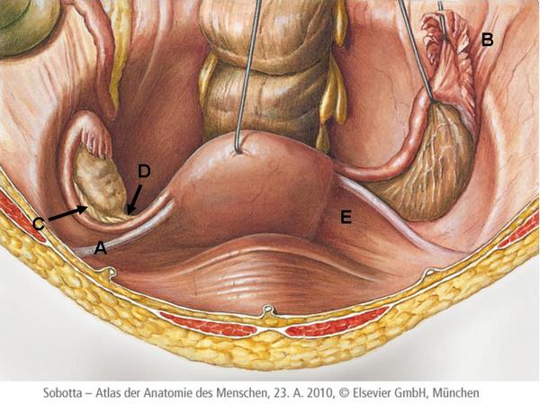
Sleep de juiste structuur naar de bijbehorende letter, of tik eerst op een kaart en dan op de rij.
A
Sleep hier naartoe
B
Sleep hier naartoe
C
Sleep hier naartoe
D
Sleep hier naartoe
E
Sleep hier naartoe
Vraag 2
Vraag 2. Midsagittale doorsnede door het mannelijk bekken
Geef achter elke structuur aan door welke letter deze in de afbeelding wordt aangewezen:
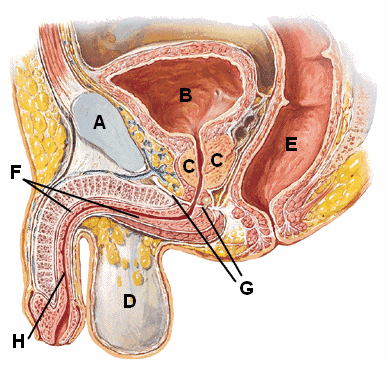
Sleep de juiste structuur naar de bijbehorende letter, of tik eerst op een kaart en dan op de rij.
A
Sleep hier naartoe
B
Sleep hier naartoe
C
Sleep hier naartoe
D
Sleep hier naartoe
E
Sleep hier naartoe
F
Sleep hier naartoe
G
Sleep hier naartoe
H
Sleep hier naartoe
Vraag 3
Vraag 3. Op de afbeelding ziet u een SOA.
Welke twee verwekkers kunnen hiervan de oorzaak zijn?
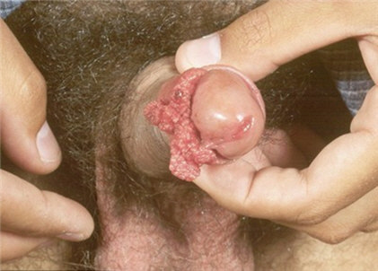
Selecteer twee alternatieven.
Vraag 4
Vraag 4. Welke drie stellingen betreffende chlamydia en de verwekker Chlamydia trachomatis zijn juist?
Meerdere antwoorden mogelijk.
Vraag 5
Vraag 5. Hormonale as
Sleep de verschillende termen naar het juiste witte kader in het schema.
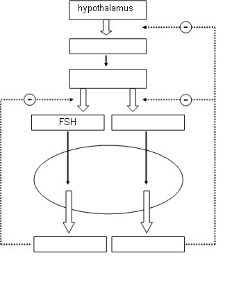
Sleep hier naartoe
Sleep hier naartoe
Sleep hier naartoe
Sleep hier naartoe
Sleep hier naartoe
Sleep een begrip naar het juiste witte kader, of tik eerst op een kaart en dan op een kader.
Vraag 6
Vraag 6. SOA
Sleep de symptomen/bevindingen en de laboratoriumdiagnostiek naar het juiste witte vakje achter de verwekker.
verwekker
symptoom/bevinding
laboratoriumdiagnostiek
Neisseria gonorrhoeae
Sleep
Sleep
Herpes genitalis
Sleep
Sleep
Treponema pallidum
Sleep
Sleep
Sleep elke term naar het juiste vak, of tik eerst op een kaart en dan op een vak.
Vraag 7
Vraag 7. Dyspareunie
Een vrouw heeft pijn bij het vrijen. Dit leidt tot een veranderde seksuele responscyclus.
Plaats de onderstaande items in de juiste volgorde: [sleep elk item binnen de juiste rechthoek]
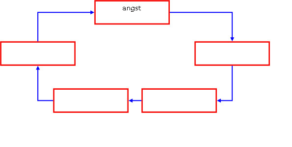
Sleep hier naartoe
Sleep hier naartoe
Sleep hier naartoe
Sleep hier naartoe
Sleep een begrip naar het juiste witte kader, of tik eerst op een kaart en dan op een kader.
Vraag 8
Vraag 8. Seksuele bijwerkingen van medicijnen
Veel medicijnen hebben (seksuele) bijwerkingen. Zo leidt de behandeling van de ziekte van Parkinson door middel van dopaminerge stoffen tot een “normalisatie van de seksuele behoefte”. In 7 tot 13% leidt het gebruik van dopaminerge stoffen tot negatieve seksuele (bij-)effecten. Deze effecten worden gevat onder de naam "dopamine dysregulation syndrome".
Het "dopamine dysregulation syndrome" verwijst naar:
Vraag 9
Vraag 9. Invloed van geslachtshormonen op het seksuele verlangen
Vul in:
Bij zowel het metabool syndroom, het Klinefelter syndroom als na bilaterale ovariëctomie bestaat er een aan .
Een geneesmiddel met als 'bijwerking' het remmen van de ejaculatie kan om die reden worden ingezet (waarbij de 'bijwerking' dus 'hoofdwerking' wordt). Dit geneesmiddel is .
Als er tevens sprake is van erectiele dysfunctie, wordt vaak gekozen voor een middel als .
Vraag 11
Vraag 11. Testosteron
Om het seksuele functioneren te bevorderen is het geven van testosteron geïndiceerd bij
Meerdere antwoorden mogelijk.
Vraag 12
Vraag 12. Wat is het effect van fosfodiësterase-remmers (bijvoorbeeld Viagra) bij mannen bij vrouwen?
Sleep elke optie naar de juiste categorie, of tik eerst op een kaart en dan op een categorie.
Bij mannen
Sleep hier naartoe
Bij vrouwen
Sleep hier naartoe
Vraag 13
Vraag 13. Prenatale seksuele differentiatie
Plaats de items in de juiste rechthoek. (sleepvraag — interactieve versie volgt; zie afbeelding)
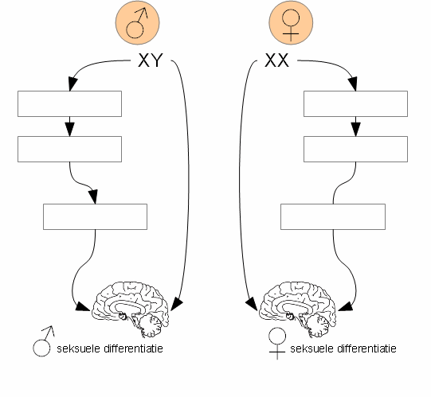
Sleep hier naartoe
Sleep hier naartoe
Sleep hier naartoe
Sleep hier naartoe
Sleep hier naartoe
Sleep hier naartoe
Sleep een begrip naar het juiste witte kader, of tik eerst op een kaart en dan op een kader.
Vraag 14
Vraag 14. Seksueel misbruik
Vul in:
De meeste gevallen van seksueel misbruik vinden plaats , waarbij de dader meestal een van het slachtoffer is en psychiatrische voorgeschiedenis heeft.
Bij seksueel misbruikte kinderen blijken de klachten (ook op volwassen leeftijd) ernstiger te zijn als de dader een van het kind is.
Vraag 15
Vraag 15. Een man van 65 jaar komt bij de huisarts met plasklachten.
Welk twee onderzoeken moet de huisarts in ieder geval uitvoeren?
Meerdere antwoorden mogelijk.
Vraag 16. Welke klachten duiden meer op een obstructieve, dan een irritatieve oorzaak van mictieklachten?
Meerdere antwoorden mogelijk.
Vraag 17
Vraag 17. Waardoor wordt de groei van myomen bevorderd?
Vraag 18
Vraag 18. Welke stelling is juist?
Een salpingitis
Vraag 19
Vraag 19. Een 55 jarige vrouw heeft last van progressief ongewild urineverlies. De klacht is begonnen na de geboorte van haar eerste kind. Het urineverlies treedt m.n. op tijdens sporten en bij hoesten of niezen, waarbij kleine beetjes urine wordt verloren zonder voorafgaand aandrang tot mictie te hebben gevoeld. Behoudens het feit ze ´s nachts 3 maal op moet staan om te plassen, zijn er geen andere mictieklachten.
Van welke vorm van urine incontinentie is hier sprake?
Vraag 20
Infectie en inflammatie
Vraag 20. Wat is een antigeentest?
Vraag 21
Vraag 21. In de Gramkleuring wordt onderscheid gemaakt tussen Grampositieve en Gramnegatieve bacteriën.
Vraag 22
Vraag 22. Vul in:
Patiënten hebben na een een verhoogd risico op infectie met Streptococcus pneumoniae, doordat deze bacterie .
Vraag 23
Vraag 23. Buiktyfus
Welke van de volgende symptomen komt bij buiktyfus (Salmonella typhi) het minst frequent voor?
Vraag 24
Vraag 24. amoebiasis
Vul in:
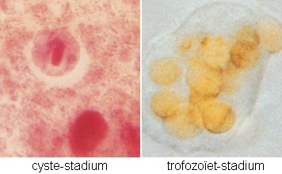
Bij de mens worden 5 vertegenwoordigers van het geslacht Entamoeba met enige regelmaat in de ontlasting aangetoond. Daarvan is slechts één soort pathogeen: . Deze protozoa komt vooral in de tropen en subtropen voor en wordt overgedragen door feco-orale transmissie van het . In het colon komt vervolgens de vegetatieve vorm vrij, het , die in een minderheid van de gevallen invasief kan worden. Het ziektebeeld dat dan kan ontstaan heet amoebiasis waarbij milde diarree tot ernstige amoeben dysenterie (diarree met bloed en slijm) kan optreden. Als daarna hematogene verspreiding plaatsvindt, dan is dat vooral naar de . De maximale periode tussen besmetting en het klinisch manifest worden van amoebiasis is .
Vraag 25
Vraag 25. Een hiv-positieve patiënt die wordt sinds een half jaar behandeld met anti-retrovirale therapie, heeft een CD4 T-cel hoeveelheid van 325/µl en een viral load van <20 copies hiv RNA per ml. Een half jaar geleden was de CD4 T-cel telling 280/µl en haar viral load 100.000 copies/ml.
Wat is er nu aan de hand?
Vraag 26
Vraag 26. HPV type 1 veroorzaakt verruca vulgaris (‘gewone wratten’). Kinderen lopen dit virus eenvoudig op door op blote voeten in de gymzaal te lopen.
Wat zegt dit gegeven over dit virus?
Vraag 27
Vraag 27. MRSA
Vul in:
De afkorting MRSA staat voor Staphylococcus aureus.
MRSA komt in Nederland en Scandinavië, door zorgvuldig antibioticumgebruik en MRSA-isolatie, weinig voor.
Bij patiënten afkomstig uit ziekenhuizen in andere landen én bij komt echter veelvuldig dragerschap voor.
Zij worden daarom bij opname tot dat dragerschap is uitgesloten.
Vraag 28
Vraag 28. Voor behandeling van een ongecompliceerde bacteriële pneumonie is de eerste keus amoxicilline per os. Wat is de voornaamste reden van deze keuze?
Amoxicilline .......
Vraag 29
Vraag 29. Voor welke gewrichtsaandoening zijn de afwijkingen aan de rechterhand op deze foto karakteristiek?
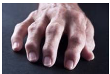
Vraag 30
Vraag 30. Reumatologie - serologische diagnostiek
Wat hoort bij wat?
Sleep een optie naar de bijbehorende rij, of tik eerst op een kaart en dan op een rij.
ziekte van Wegener
Sleep hier naartoe
reumatoïde artritis (RA)
Sleep hier naartoe
systemische lupus erythematodes (SLE)
Sleep hier naartoe
Vraag 31
Vraag 31. Inflammatoire en niet-inflammatoire gewrichtsaandoeningen
Inflammatoire en niet-inflammatoire gewrichtsaandoeningen hebben vaak verschillende klachten en symptomen.
Wat hoort bij wat?
Sleep een optie naar de bijbehorende rij, of tik eerst op een kaart en dan op een rij.
Wat betreft ochtendstijfheid, niet-inflammatoir
Sleep hier naartoe
Wat betreft ochtendstijfheid, inflammatoir
Sleep hier naartoe
Wat betreft algemene symptomen, niet-inflammatoir
Sleep hier naartoe
Wat betreft algemene symptomen, inflammatoir
Sleep hier naartoe
Wat betreft pijnklachten, niet-inflammatoir
Sleep hier naartoe
Wat betreft pijnklachten, inflammatoir
Sleep hier naartoe
Vraag 32
Vraag 32. Op de SEH komt een 87-jarige verwarde vrouw, woonachtig in een verpleeghuis. Tot de voorgaande dag was zij nog helder en adequaat, maar klaagde zij wel over pijn in de onderbuik. Bij onderzoek heeft zij koorts; ’n polsfrequentie van 120/min bij een bloeddruk van 130/80 mmHg. De ademhalingsfrequentie is 12/minuut en het laboratoriumonderzoek toont een flinke leukocytose en verhoogd CRP.
Je stelt de waarschijnlijkheidsdiagnose urosepsis.
Aan hoeveel criteria voldoet ze in de Quick SOFA (Sepsis related Organ Failure Assessment)? (interactieve versie volgt)
Modelantwoord
(volgt)
Vraag 33
Vraag 33. Pruritus
Pruritus (jeuk) kan veel verschillende oorzaken hebben.
Wat past bij wat?
Sleep een optie naar de bijbehorende rij, of tik eerst op een kaart en dan op een rij.
alléén excoriaties
Sleep hier naartoe
urticaria
Sleep hier naartoe
geneesmiddelexantheem
Sleep hier naartoe
scabies
Sleep hier naartoe
xerosis cutis
Sleep hier naartoe
Vraag 34
Vraag 34. Wat hoort bij wat?
U ziet hier twee rijen met ieder vier afbeeldingen van dermatologische aandoeningen. Welke afbeelding uit de bovenste rij (A t/m D) past bij welke afbeelding uit de onderste rij (1 t/m 4)? [Bron: afbeelding A, B, 1, 2 en 3 'VUmc' | afbeelding C, D en 4 'huidziekten.nl']
Sleep de juiste afbeelding uit de onderste rij naar het bijbehorende vak, of tik eerst op een kaart en dan op een vak.
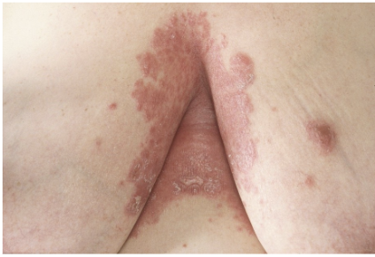
A
Sleep hier naartoe
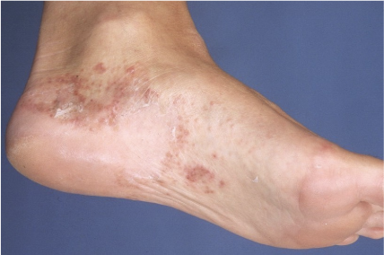
B
Sleep hier naartoe
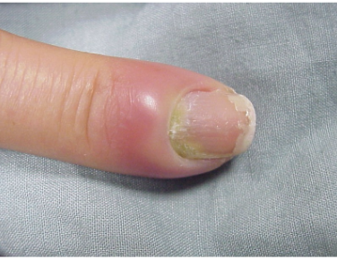
C
Sleep hier naartoe
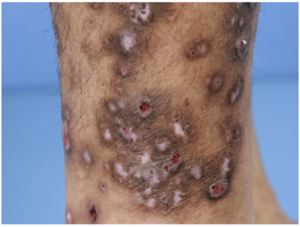
D
Sleep hier naartoe
Vraag 35
Vraag 35. Wat is de juiste therapie bij welke aandoening?
Sleep de juiste therapie naar de bijbehorende afbeelding, of tik eerst op een kaart en dan op een vak.
A
Sleep hier naartoe
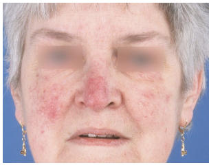
B
Sleep hier naartoe
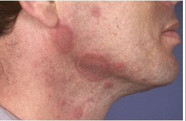
C
Sleep hier naartoe
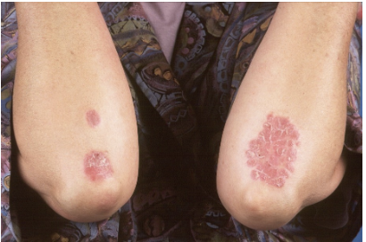
D
Sleep hier naartoe
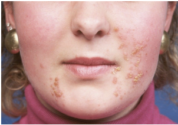
E
Sleep hier naartoe
Vraag 36
Vraag 36. Bij de mantoux-test wordt een kleine hoeveelheid tuberculine (een niet-infectieus extract van Mycobacterium tuberculosis (purified protein derivative)) in de huid ingespoten en na 3 tot 5 dagen wordt gecontroleerd of het lichaam hierop gereageerd heeft: er ontstaat dan een induratie (te meten bultje).
Een positieve mantoux-test betekent, net als een positieve Interferon Gamma Release Assay (IGRA), dat
Vraag 37
Vraag 37. Zoönosen
Zoönosen zijn infectieziekten
Vraag 38
Vraag 38. Bloederige diarree
Een patiënt presenteert zich met bloederige diarree.
Welke vier pathogene micro-organismen dient u door middel van feceskweek uit te sluiten?
Meerdere antwoorden mogelijk.
Vraag 39
Vraag 39. Deze afbeelding geeft het verloop van het antigeen (Ag) niveau en/of de antistofrespons tegen een micro-organisme weer.
Welke curve wordt met welk nummer weergegeven?
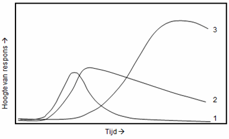
Sleep de juiste curve naar het bijbehorende nummer, of tik eerst op een kaart en dan op een vak.
1
Sleep hier naartoe
2
Sleep hier naartoe
3
Sleep hier naartoe
Vraag 40
Vraag 40. Escherichia coli is de meest voorkomende verwekker van urineweginfecties. De bacterie komt vanuit de darm en vanaf het perineum via de uretra de blaas in.
Hieronder [zie tekening] is en schematische tekening van de cel van een Gramnegatieve bacterie.
Welke structuur gebruikt de E. coli om de blaas te bereiken? (sleepvraag — interactieve versie volgt; zie afbeelding)
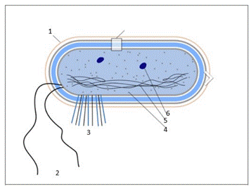
Vraag 41
Vraag 41. Een drie-jarige die niet gevaccineerd is volgens het Rijksvaccinatie programma (RVP) komt bij de huisarts met hoesten, conjunctivitis en fotofobie. Hij heeft een snotneus en koorts. Er begint zich een rash te ontwikkelen bij het gelaat en in de hals.
Welk virus is het meest waarschijnlijk de oorzaak van de klachten?
Vraag 42
Hematologie en oncologie
Vraag 42. Monoclonale piek
Vul in:
Een monoclonale piek in het immunoglobulinen eiwitspectrum is een verschijnsel bij een en vraagt om .
Vraag 43
Vraag 43. Bloedgroepen
Geef bij de bloedgroepen aan in welke frequentie ze voorkomen in de Nederlandse bevolking:
Sleep een optie naar de bijbehorende rij, of tik eerst op een kaart en dan op een rij.
Bloedgroep 0
Sleep hier naartoe
Bloedgroep A
Sleep hier naartoe
Bloedgroep B
Sleep hier naartoe
Bloedgroep AB
Sleep hier naartoe
Vraag 44
Vraag 44. Mutaties
Welke genetische mutatie is het meest ernstig?
Vraag 45
Vraag 45. IJzergebreksanemie
Een man van 50 jaar komt bij de huisarts en blijkt bij bloedonderzoek een ijzergebreksanemie te hebben.
Geef bij elk onderzoek aan of dit als vervolg-onderzoek zinvol is en waarom.
Sleep een optie naar de bijbehorende rij, of tik eerst op een kaart en dan op een rij.
vitamine B12 spiegel
Sleep hier naartoe
coloscopie
Sleep hier naartoe
bronchoscopie
Sleep hier naartoe
Vraag 46
Vraag 46. Processen in celkern en cytoplasma
Welke processen vinden plaats in de eukaryotische celkern en welke in het cytoplasma?
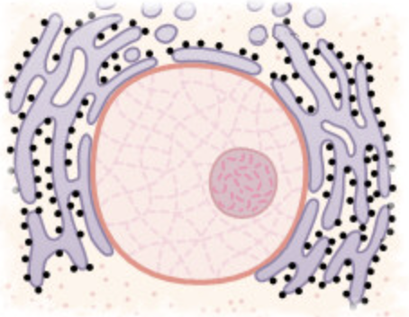
Sleep elk proces naar de juiste categorie, of tik eerst op een kaart en dan op een categorie.
Celkern
Sleep hier naartoe
Cytoplasma
Sleep hier naartoe
Vraag 47
Vraag 47. Patiënt identificatie
Bij medische handelingen is het belangrijk om zeker te weten welke patiënt u voor u heeft.
Hoe kunt u het beste naar de persoonsgegevens vragen?
Vraag 48
Vraag 48. Op welke wijze ontsnappen tumoren aan het immuunsysteem?
Vraag 49
Vraag 49. Moleculair gerichte therapieën worden tegenwoordig toegepast bij de behandeling van verschillende tumoren. De werking verschilt per middel.
Welke combinatie middel en werking is juist?
Sleep een optie naar de bijbehorende rij, of tik eerst op een kaart en dan op een rij.
Imatinib
Sleep hier naartoe
Bevacizumab
Sleep hier naartoe
Cetuximab
Sleep hier naartoe
Trastuzumab
Sleep hier naartoe
Vraag 50
Vraag 50. Botmetastasen
Wat hoort bij wat?
Sleep elke tumor naar de juiste categorie, of tik eerst op een kaart en dan op een categorie.
Osteoblastische metastasen
Sleep hier naartoe
Osteoclastische metastasen
Sleep hier naartoe
Vraag 51
Vraag 51. Intermitterende combinatietherapie
Wat is het doel van intermitterende combinatietherapie?
Vraag 52
Vraag 52. Bestraling
Wat hoort bij wat?
Sleep een optie naar de bijbehorende rij, of tik eerst op een kaart en dan op een rij.
naam van de straling welke in de radiotherapie wordt toegepast
Sleep hier naartoe
inwendige bestraling
Sleep hier naartoe
bestraling van een intact lichaamsdeel, waar zich mogelijk subklinische metastasen bevinden
Sleep hier naartoe
Vraag 53
Vraag 53. Tumorsuppressor-genen
Tumorsuppressor-genen coderen voor eiwitten.
Welke 3 celfuncties worden door deze eiwitten gestimuleerd?
Meerdere antwoorden mogelijk.
Vraag 54
Vraag 54. Maligniteit
Twee citeria voor maligniteit zijn:
Meerdere antwoorden mogelijk.
Vraag 55
Vraag 55. Casus
U bent huisarts. De 75 jarige meneer Jansen komt bij u op het spreekuur. Hij heeft klachten van dunne bruine ontlasting, gewichtsverlies en vermoeidheid. Bij aanvullend onderzoek vindt u een ijzergebreksanemie.
Wat is de meest waarschijnlijke diagnose?
Vraag 56
Vraag 56. Applecore lesie
Foto: detail-opname
Op een colon inloopfoto ziet u een applecore lesie.
Bij welke diagnose past dit beeld?
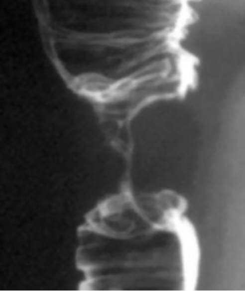
Vraag 57
Vraag 57. Knobbeltje in de borst
U bent huisarts. Een 25-jarige studente komt op uw spreekuur. Zij heeft een knobbeltje in haar rechter borst gevoeld. Het knobbeltje is glad begrensd.
Welke diagnose acht u het meest waarschijnlijk?
Vraag 58
Vraag 58. Moeheid - afwijkend bloedbeeld
Een voorheen gezonde vrouw komt met ernstige moeheidsklachten bij de huisarts. Bij bloedonderzoek worden de volgende waarden gevonden: Hb = 1,5 mmol/l trombocyten = 3 x 109/l leukocyten = 0,5 x 109/l Geef voor de bloeduitslagen aan of er een acute bedreiging van uitgaat.
Sleep een optie naar de bijbehorende rij, of tik eerst op een kaart en dan op een rij.
leukocyten = 0,5 x 109/l
Sleep hier naartoe
Hb = 1,5 mmol/l
Sleep hier naartoe
trombocyten = 3 x 109/l
Sleep hier naartoe
Vraag 59
Vraag 59. Trombocytenconcentraat
Geef aan of transfusie met een trombocytenconcentraat zinvol is of niet.
Sleep elke situatie naar de juiste categorie, of tik eerst op een kaart en dan op een categorie.
Zinvol
Sleep hier naartoe
Niet zinvol
Sleep hier naartoe
Vraag 60
Vraag 60. Mammacarcinoom
Vul in:
Bij een kwaadaardig knobbeltje in de borst kan de chirurg een lumpectomie uitvoeren.
Bij deze in opzet ingreep wordt borst verwijderd.
Daarna volgt nabehandeling met radiotherapie.
de radiotherapie kan als behandeling chemotherapie worden gegeven.
Vraag 61
Vraag 61. Testiscarcinoom
Vul in:
Testiscarcinoom is relatief zeldzaam, maar toch de meest voorkomende vorm van kanker bij mannen tussen .
In 90% van de gevallen betreft het een .
Er kan dan sprake zijn van een seminoom (55%) of een non-seminoom (45%). Als de tumormarkers alfa-foetoproteïne (AFP) en het beta-hCG beide verhoogd zijn, dan wijst dat meestal op een .
Als er lymfkliermetastasen para-aortaal en in de lever worden aangetroffen, is de patiënt te genezen.
Vraag 62
Vraag 62. Oesofagus-carcinoom
Oesofagus-carcinoom komt in twee vormen voor: plaveiselcel-carcinoom en adeno-carcinoom. Beide vormen komen vaker voor bij rokers en hebben een slechte prognose. Er zijn ook een aantal verschillen.
Wat hoort bij wat?
Sleep elk kenmerk naar de juiste categorie, of tik eerst op een kaart en dan op een categorie.
Plaveiselcel-carcinoom
Sleep hier naartoe
Adeno-carcinoom
Sleep hier naartoe
Vraag 63
Vraag 63. Leukemie
Een voorheen altijd gezonde jonge vrouw van 20 belt u als huisarts vanwege kortademigheid en wazig zien. Ze kan haar zinnen niet zonder rust uitspreken. U gaat meteen naar haar toe en treft een bleke vrouw aan, met verspreide hematomen en petechiën.
Vul in:
De klachten en symptomen passen bij een leukemie.
U stuurt haar naar de eerste hulp van het ziekenhuis. Daar wordt het volgende bloedonderzoek verricht:
- Hb, want zij ; - Trombocyten-aantal, want zij ; - Leukocyten-aantal, want er zijn klachten die wijzen op .
Vraag 64
Vraag 64. Microcytaire anemie
Een jonge Turkse vrouw blijkt een microcytaire anemie te hebben: Hb 6,5 mmol/l, MCV 68.
Welke combinatie van laboratorium uitslagen past bij welke diagnose?
Sleep een optie naar de bijbehorende rij, of tik eerst op een kaart en dan op een rij.
Verlaagd serum ferritine, verhoogd aantal trombocyten (568 x 109/l)
Sleep hier naartoe
Verlaagd aantal trombocyten, verlaagd aantal leukocyten (2 x 109/l), verlaagd fibrinogeen (1,0 gr/l)
Sleep hier naartoe
Verlaagd aantal trombocyten, verhoogd aantal leukocyten (34 x 109/l), normaal fibrinogeen
Sleep hier naartoe
Normaal serum ferritine, normaal aantal trombocyten
Sleep hier naartoe
Vraag 65
Vraag 65. Maligne lymfomen
Bij maligne lymfomen wordt een onderscheidt gemaakt tussen het Hodgkin lymfoom en een groot aantal (> 40) verschillende soorten non-Hodgkin lymfomen.
Wat hoort bij wat?
Sleep elk kenmerk naar de juiste categorie, of tik eerst op een kaart en dan op een categorie.
Hodgkin lymfoom
Sleep hier naartoe
Non-Hodgkin lymfoom
Sleep hier naartoe
Vraag 66
Medisch wetenschappelijk onderzoek 2
Vraag 66. Wat is kenmerkend voor kwalitatief onderzoek?
Vraag 67
Vraag 67. Voor welk doel is kwalitatief onderzoek minder geschikt?
Vraag 68
Vraag 68. Welke beschrijving hoort bij welke vorm van data-analyse?
Sleep een optie naar de bijbehorende rij, of tik eerst op een kaart en dan op een rij.
Actie-onderzoek
Sleep hier naartoe
Case study
Sleep hier naartoe
Grounded theory
Sleep hier naartoe
Vraag 69
Vraag 69. Voor welke onderzoeksvraag is kwalitatief onderzoek het meest geschikt?
Vraag 70
Vraag 70. Welke vorm van longkanker komt in Nederland het meeste voor?
Vraag 71
Vraag 71. Welke bewering is juist?
Vraag 72
Vraag 72. Longkanker
Vul in:
Is in Nederland longkanker de meest voorkomende vorm van kanker? .
Heeft longkanker in Nederland het grootste aandeel in de totale kankersterfte? .
Vraag 73
Vraag 73. Welke drie organen zijn meestal betrokken bij hematogene metastasering van het longcarcinoom?
Vink er drie aan.
Vraag 74
Vraag 74. Wat voor figuur is dit?
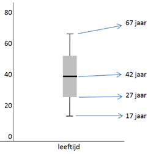
Vraag 75
Vraag 75. Welke conclusie kan uit deze figuur worden getrokken?
Vraag 76
Vraag 76. Hieronder ziet u de output van een multipele logistische regressie analyse. In deze analyse is een interactieterm (SMC_dich by APOE_dich) opgenomen.
Welke vorm van vertekening kan met de interactieterm onderzocht worden?
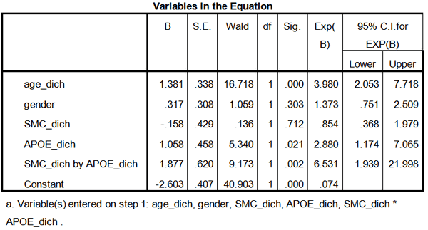
Vraag 77
Vraag 77. Onderzoekers willen het BMI bij kinderen voorspellen aan de hand van hun frisdrankconsumptie, het aantal uur dat ze TV kijken en de tijd dat ze buiten spelen.
Welke analysetechniek past hier het best bij?
Vraag 78
Vraag 78. Welke twee eigenschappen gelden voor experimenteel onderzoek?
Experimenteel onderzoek
Meerdere antwoorden mogelijk.
Vraag 79
Vraag 79. Welke methode focust op het toetsen van hypotheses die ontwikkeld zijn uit theorieën?
Vraag 80
Vraag 80. Geef aan welk onderzoek het beste kan worden uitgevoerd om de gegeven waarschijnlijkheidsdiagnose te bevestigen of te verwerpen.
Vul in:
pneumonie
longcarcinoom
COPD
Vraag 81
Vraag 81. In een artikel over de relatie tussen alcohol en borstkanker leest u het volgende: “het risico op borstkanker bij vrouwen die alcohol drinken ten opzichte van vrouwen die geen alcohol drinken blijkt 3,04.”
Welke bewering is juist?
Vraag 82
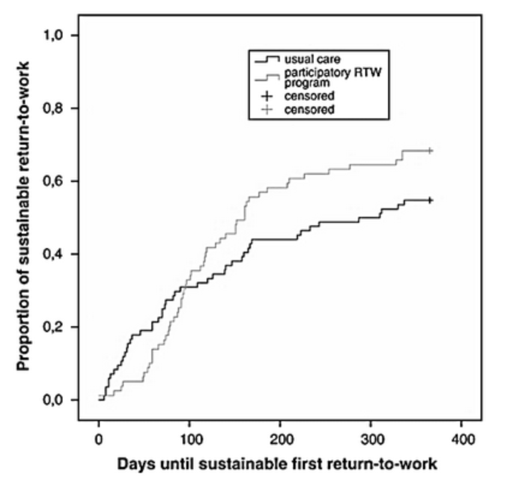
Vraag 82. In een onderzoek naar een nieuwe interventie om terugkeer naar het werk na ziekte te bevorderen, wordt de bovenstaande figuur gemaakt op basis van de onderzoeksgegevens.
Hoe wordt deze curve genoemd?
Vraag 83
Vraag 83. Wat is het belangrijkste verschil tussen een logranktoets en een Cox regressieanalyse?
Bij een Cox regressieanalyse kan men
Vraag 84
Vraag 84. Door wie wordt bepaald of een onderzoek WMO-plichtig is? (WMO = Wet medisch-wetenschappelijk onderzoek met mensen)
Vraag 85
Vraag 85. In een studie worden patiënten gerandomiseerd naar behandeling met een nieuw medicijn of een placebo.
Wat is het doel van deze randomisatie?
Vraag 86
Arts en patiënt 4
Vraag 86. Coronale doorsnede van het hoofd (CT-scan)
Benoem de structuren op deze coronale doorsnede.
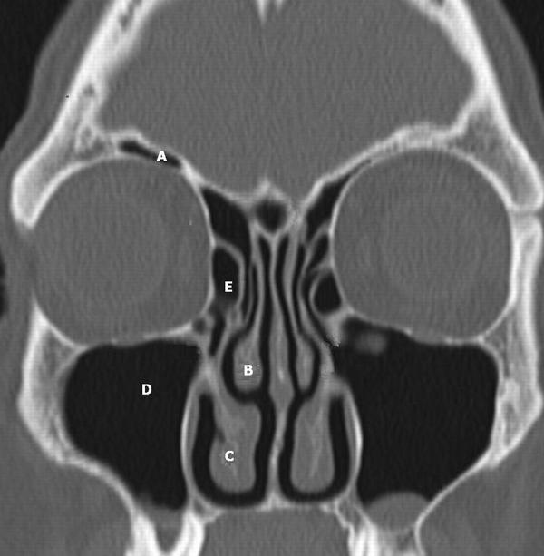
Sleep de juiste structuur naar de bijbehorende letter, of tik eerst op een kaart en dan op de rij.
A
Sleep hier naartoe
B
Sleep hier naartoe
C
Sleep hier naartoe
D
Sleep hier naartoe
E
Sleep hier naartoe
Vraag 87
Vraag 87. Neus en neus-bijholtes
Vul in:
De ostia van de sinus frontalis en sinus maxillaris bevinden zich onder de .
De opening van de buis van Eustachius bevindt zich ter hoogte van de .
scheidt de van de orbita.
Vraag 88
Vraag 88. Otitis externa en otitis media acuta
Geef aan of de symptomen en klachten passen bij otitis externa, bij otitis media acuta óf bij beiden:
Sleep elk symptoom naar de juiste categorie, of tik eerst op een kaart en dan op een categorie.
Otitis externa
Sleep hier naartoe
Otitis media acuta
Sleep hier naartoe
Beiden
Sleep hier naartoe
Vraag 89
Vraag 89. Wat wordt op deze afbeelding aangeduid met de letters A, B, C en D?
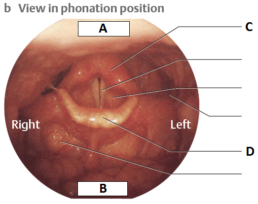
Sleep de juiste structuur naar de bijbehorende letter, of tik eerst op een kaart en dan op de rij.
A
Sleep hier naartoe
B
Sleep hier naartoe
C
Sleep hier naartoe
D
Sleep hier naartoe
Vraag 90
Vraag 90. Bron afbeelding: Probst R et al. Basic Otorhinolaryngology. A step-by-step Learning Guide. Thieme Verlag, 2005, ISBN 9783131324412]
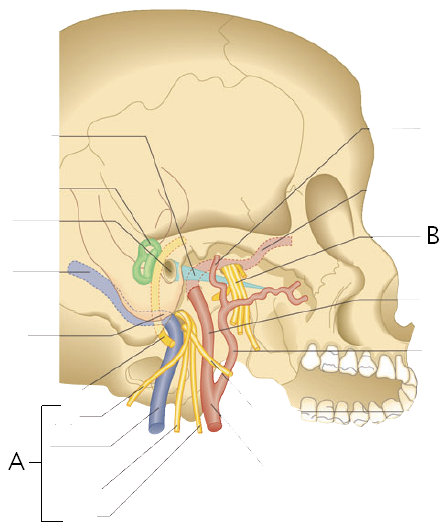
Welke zenuwen worden weergegeven door de letter A? . Door welk foramen en treden deze uit? .
Welke zenuwen worden weergegeven door de letter B? . Door welk foramen en treden deze uit? .
Vraag 91
Vraag 91. Vul in:
De meest voorkomende oorzaak van keelpijn is een infectie.
De kans op een is ongeveer 50% als de patiënt koorts heeft, er is van hoest, er exsudaat is op de tonsillen en er pijnlijke voorste halslymfeklieren zijn.
Vraag 92
Vraag 92. Sensitiviteit, specificiteit
Vul in:
Om een ziekte uit te sluiten bij een lage voorafkans op ziekte is een test met een het beste.
Om een ziekte aan te tonen bij een hoge voorafkans op ziekte is een test met een het beste.
Vraag 93
Vraag 93. Vul in:
Een funnelplot in een systematic review is trechtervormig. Dat komt doordat kleinere studies minder zijn dan grotere studies.
Een funnelplot wijst op publication bias als .
Vraag 94
Vraag 94. Vul in:
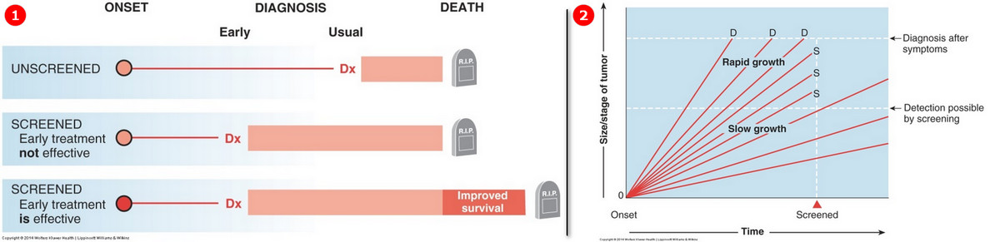
Afbeelding 1 betreft bias. Deze bias is te beschrijven als "".
Afbeelding 2 betreft bias. Deze bias is te beschrijven als "".
Vraag 95
Vraag 95. Falsificatiebeginsel van Karl Popper
Welke twee van onderstaande theorieën zijn, volgens het falsificatiebeginsel van Karl Popper, falsifieerbaar?
Meerdere antwoorden mogelijk.
Vraag 96
Vraag 96. Een paradigma is volgens Kuhn: [Zie Koster, p. 137, 140-1]
Vraag 97
Vraag 97. Welke beschrijving hoort bij welk begrip?
Sleep een optie naar de bijbehorende rij, of tik eerst op een kaart en dan op een rij.
Inductie:
Sleep hier naartoe
Deductie:
Sleep hier naartoe
Falsificatie:
Sleep hier naartoe
Verificatie:
Sleep hier naartoe
Vraag 98
Vraag 98. Premaligne aandoeningen van de cervix uteri
Vul in:
Testen op de aanwezigheid van hrHPV is een methode voor detectie van cervixafwijkingen dan de klassieke uitstrijk.
De diagnose van een premaligne afwijking stelt men op basis van het .
CIN I-laesies worden behandeld.
CIN III-laesies leiden onbehandeld in ongeveer van de gevallen tot invasief carcinoom.
Vraag 99
Vraag 99. Maligne tumoren van het ovarium
Vul in:
Maligne tumoren van het ovarium uiten zich doorgaans in een .
Een irregulaire menstruatie is kenmerkend symptoom van een ovariumcarcinoom.
Premenopauzaal is van de ovariumtumoren maligne. Postmenopauzaal is dit .
Een afwijking in het BRCA1-gen geeft kans op het krijgen van ovariumcarcinoom.